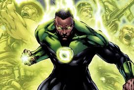

Green Paul is name of my Nemesis
A Green Lantern's ring, is one of the most powerful weapons in the known universe, It has the ability to affect and use fundamental forces of the known universe,
including electromagnetic energies such as gravity,radiation, heat, light, and powerful blasts of concussive force.
Superpowers of Green Paul
- A Green Lantern’s powers are pretty much unlimited. Yes, I know there are a couple small limitations thrown in there mostly for show, but for all practical purposes a Green Lantern can do anything he (or she, or it, or whatever) wants.
A GL’s power comes from his ring, which harnesses a green cosmic energy and bends it to their will. Through the power of the ring, the GL can make real anything he can imagine and has the power of will to do. Traditionally Green Lanterns have used this immense power to create giant green boxing gloves to clobber their enemies with, but really that’s barely scratching the surface of what they’re capable of.

Directions to the lair of nemesis.
- From Maryville go to near by empty land.
- After reaching to empty land wait for iskard,he is the one who picks to planet Mogo
- Planet Mogo is the place where you can find Green Paul
Back to the index